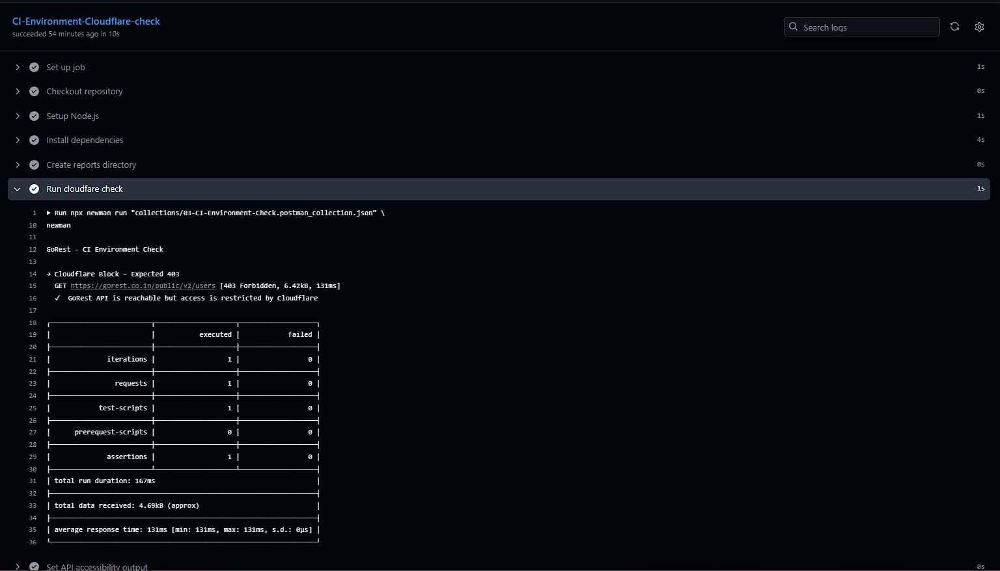
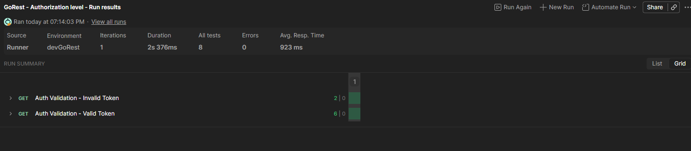
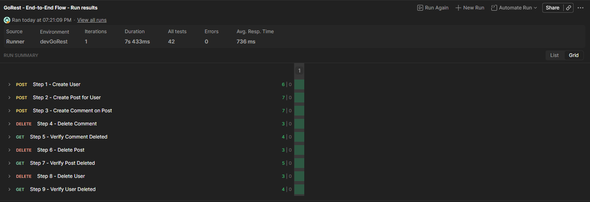
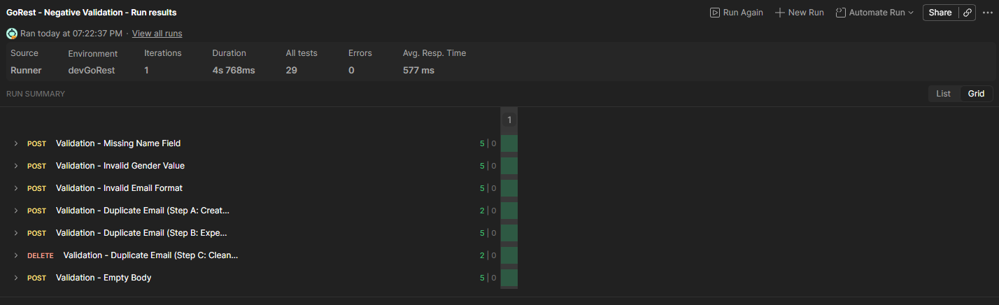

What Is This?
APIs are where I feel at home. Working with them daily — building requests, chaining flows, validating contracts, writing SQL queries to pull and cross-check data from the database — is something I genuinely enjoy. I wanted to build a project that reflects how I actually approach API testing, not just a collection of requests, but a structured framework with real CI/CD behind it.
The framework is built against the GoRest public REST API, which provides a full set of CRUD endpoints — a good fit for demonstrating end-to-end flows. It uses Postman collections and Newman to cover authentication validation, a full data-driven lifecycle, and negative contract boundary testing. A GitHub Actions pipeline runs everything on every push and PR to main. All collections are available on GitHub if you want to look at the structure directly.
Stack: Postman · Newman · Node.js · GitHub Actions
See It In Action
Collection 01 — CI Environment Check
The gate. Passes on 403, opens the pipeline on 200. Everything downstream depends on this result.

Collection 02 — Authentication Validation
Validates both sides of auth: an invalid token returns 401, a valid token returns 200. Each request asserts status code, response time under 2000ms, valid JSON structure, and correct Content-Type header.

Collection 03 — End-to-End Flow
Full CRUD lifecycle run across 4 data iterations from a CSV file. Each iteration creates a user, posts a post, posts a comment, then deletes all three in reverse — with a 404 verification after each deletion to confirm the resource is truly gone. Resource IDs chain across requests via collection variables. Response time assertion runs at collection level, covering all 9 requests without repeating the same test on each one.

Collection 04 — Negative Validation
Tests API contract boundaries by sending invalid and incomplete requests to POST /users: missing fields, invalid gender, invalid email format, duplicate email, and empty body — all expecting 422 with the correct error target field in the response. The duplicate email scenario generates a unique address at runtime via a pre-request script, preventing test pollution between runs.

The CI/CD Pipeline
All four jobs run on every push and PR to main. Collections 02, 03, and 04 run in parallel after the gate resolves. Each uploads its Newman report as a downloadable artifact directly from the Actions dashboard.

Cloudflare Issue — And How it was Handled
Everything ran perfectly locally. When we moved to CI, we hit a wall: GoRest sits behind Cloudflare, which blocks requests from cloud server IPs — and GitHub Actions runners are exactly that. Collections 02, 03, and 04 all failed on the first run, not because the tests were wrong, but because we simply couldn't reach the API from there.
We couldn't just call it a known limitation and leave it. That reads as an unresolved bug. So instead, we built a dedicated collection (Collection 01) that expects the block. The test passes when it receives a 403. If the API is actually accessible (returns 200), Newman exits non-zero — and that signal is captured as a job output variable that controls whether the remaining collections run at all.
The logic is intentionally inverted:
Newman exits 0 → 403 received → Cloudflare is blocking → skip API tests (expected)
Newman exits 1 → 200 received → API is accessible → run collections 02–04The pipeline stays green either way. The skip reason is explicit in the logs, not silently swallowed.